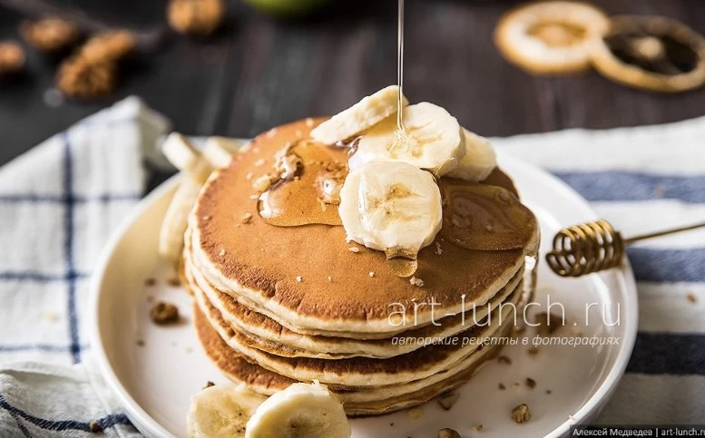
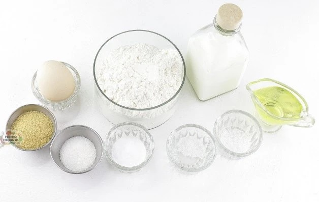
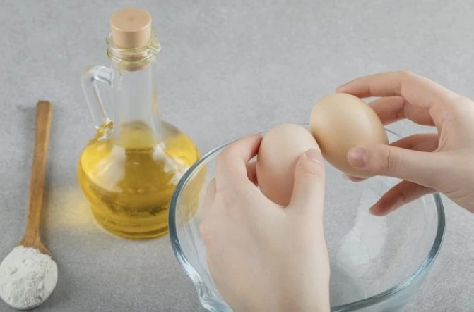
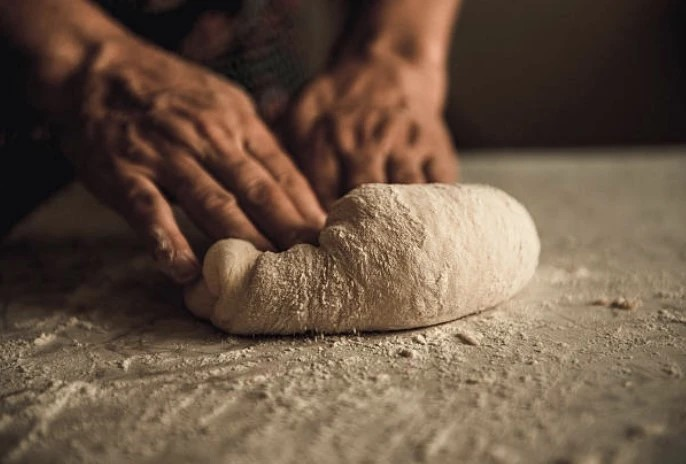
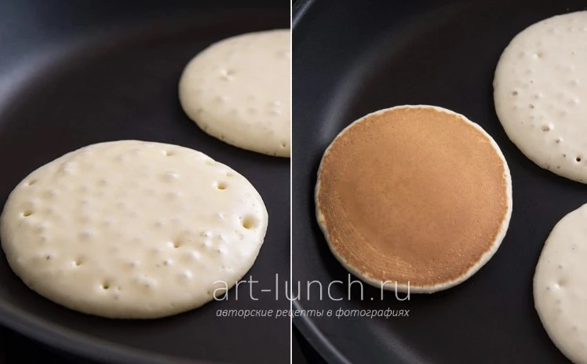

🥞 Панкейки
Простые и вкусные панкейки, которые можно приготовить на завтрак.

Ингредиенты
- 2 яйца
- 200 мл молока
- 200 г муки
- 2 столовые ложки сахара
- 1 чайная ложка разрыхлителя
- Щепотка соли
- Немного масла для жарки
Время приготовления:
Секрет: не перемешивайте тесто слишком долго.
Приготовление
-
1. Подготавливаем ингредиенты
Сначала подготовьте все необходимые ингредиенты.

-
2. Добавляем молоко и яйца
В миску добавьте молоко и яйца. Затем перемешайте их.

-
3. Делаем тесто
Добавьте муку, сахар, соль и разрыхлитель. Перемешайте всё венчиком.

-
4. Жарим панкейки
Разогрейте сковороду и вылейте немного теста. Когда сверху появятся пузырьки, переверните панкейк.

-
5. Подаём панкейки
Готовые панкейки можно украсить ягодами, бананом, мёдом или сиропом.
Полезная информация
Добавьте немного ч. л. ванильного сахара для вкуса.
💡 Секрет вкусных панкейков
Не нужно слишком долго перемешивать тесто. Тогда панкейки получатся мягкими и воздушными.